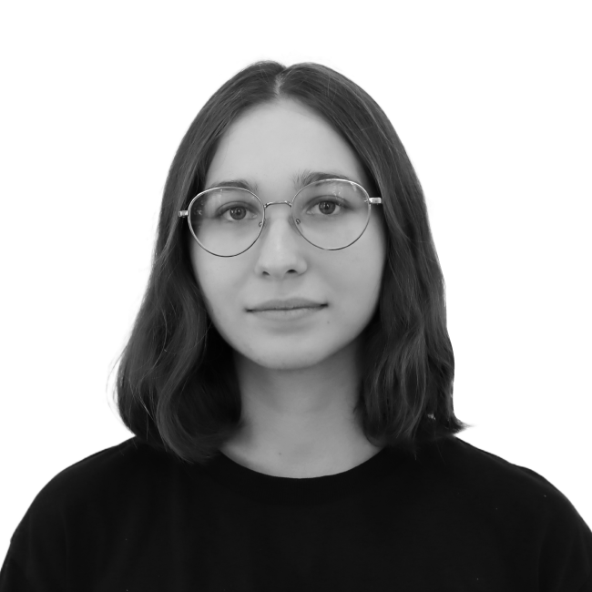

Олена Бондар
Графічний дизайнер
Контакти
Навички
Дизайн
- Традиційне малювання
- Композиція
- Перспектива
- Теорія кольору
- Історія мистецтв
- Графічний дизайн
- Брендинг (дизайн логотипів та розробка фірмового стилю)
- Дизайн для наукових статей та грантів
Програми з дизайну
- Adobe Illustartor
- Adobe Photoshop
- Figma
- Blender
- Canva
Освіта
Київіський Національний Університет Технологій та Дизайну | КНУТД
2019 - 2023 рік
Диплом бакалавру з Графічного Дизайну
Мови
- Українська: С2 (рідна)
- Англійська: B2
- російська: хотілось би забути
тут може бути ваша реклама
Профіль
Я графічний дизайнер з більш ніж 5-річним досвідом роботи в галузі дизайну та ілюстрацій для наукових цілей. Працюю на фрілансі з 2019 року та надаю графічну підтримку для широкого спектру наукових проектів: статей, презентацій, обкладинок для журналів, проектів на основі COST та інших грантових проектів. Також займаю псаду Вебсайт координатора в міжнародній компанії в сфері гостинності та готельного бізнесу. Зараз поринула у світ фронт енду і сподіваюсь він мене не "ендне".
Досвід
Фріланс
2019 - зараз
- Науковий дизайн (презентації, обкладинки, ілюстрації до статей)
- Корпоративний дизайн (дизайн логотипів, візитівок)
- Візуальні матеріали для соціальних мереж (обкладинки, інфографіка, пости)
- Друковані матеріали (великі постери, банери, флаєри, брошури, меню)
- Комунікація з клієнтами
- Робота з обмеженим часом та дедлайнами
Вебсайт Координатор
ПКФ Хоспіталіті груп
Вересень 2022 - зараз
Вебсайт:
- Координація та адміністрування вебсайту
- Робота з програмним забезпеченням Umbraco Cloud
- Підтримка вебсайтів у актуальному стані, додавання контенту на вебсайт
- Вирішення проблем з доступністю сайтів
- Використання HTML та CSS для оновлень всередині платформи
- Керування доменами
- SEO-налаштування для вебсайтів
Дизайн:
- Розробка візуальних елементів для соціальних мереж
- Робота з презентаціями
- Створення обкладинок для вебсайту
- Створення друкованих матеріалів для форумів та круглих столів, робота з брендбуком
- Корпоративний дизайн (візитки, резюме, корпоративні фотографії, банери, поліграфічні матеріали)
Проекти
Ілюстрації для наукових статей
- State-of-the-Art, Insights, and Perspectives for MOFs-Nanocomposites and MOF-Derived (Nano)Materials - 21 April 2025 - Wiley Online Library – Advanced Materials.
- Unravelling the Potential of Crude Enzyme Extracts for Biocatalyst Entrapment in Metal–Organic Frameworks - April 11, 2025 - The American Chemical Society.
- Zirconium vs. hafnium: a comparative study of mesoporous MOF stability - Chemical Communications.
- Identifying synthetic variables influencing the reproducible microfluidic synthesis of ZIF nano- and micro-particles - Communications Materials.
- Biomedical Metal–Organic Framework Materials: Perspectives and Challenges - Wang - 2024 - Advanced Functional Materials - Wiley Online Library.
- Multilength Scale Hierarchy in Metal‐Organic Frameworks: Synthesis, Characterization and the Impact on Applications - Tsang - 2024 - Advanced Functional Materials - Wiley Online Library.
- In Situ Study of the Activation Process of MOF-74 Using Three-Dimensional Electron Diffraction - Chemistry of Materials.
- Metal-organic frameworks for the capture of dissolved CO2 and generated carbonate ions from water – Research Square.
- Special Issue: ‘Chemistry in Ukraine’- The Chemical Record: Volume 24, Issue 2 - Wiley Online Library.
- The Importance of Dean Flow in Microfluidic Nanoparticle Synthesis: A ZIF‐8 Case Study - Yu - 2024 - Small Methods - Wiley Online Library.
Обкладинки для наукових журналів
- Polymer Brushes Synthesized by the “Grafting-through” Approach: Characterization and Scaling Analysis - Langmuir cover - November 12, 2024 - Volume 40, Issue 45.
- Nano-to-Macroscale Reticular Materials to Address Societal Challenges (Adv. Funct. Mater. 43/2024) Ettlinger - 22 October 2024 - Advanced Functional Materials - Wiley Online Library.
- Special Issue: Chemistry in Ukraine - The Chemical Record: Volume 24, Issue 2 - 08 February 2024 - Wiley Online Library.
- How Reproducible are Surface Areas Calculated from the BET Equation? (Adv. Mater. 27/2022) - Inside Back Cover - 07 July 2022 - Advanced Materials - Wiley Online Library.
- Reticular Nanoscience: Bottom-Up Assembly Nanotechnology - Journal of the American Chemical Society (JACS), April 7 2022, 144, 17, 7531–7550.